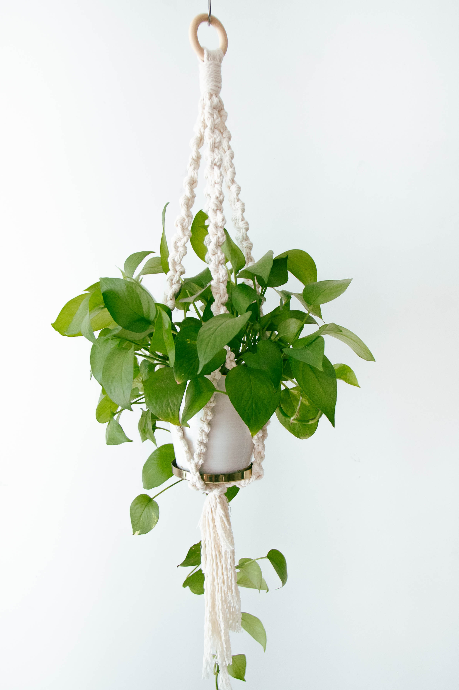

A houseplant is a plant that is grown indoors in places such as residences and offices, mainly for decorative purposes, but studies have also shown them to have positive psychological effects. They also help with indoor air purification, since some species, and the soil-dwelling microbes associated with them, reduce indoor air pollution by absorbing volatile organic compounds including benzene, formaldehyde, and trichloroethylene. While generally toxic to humans, such pollutants are absorbed by the plant and its soil-dwelling microbes without harm.
Common houseplants are usually tropical or semi-tropical epiphytes, succulents or cacti. Houseplants need the correct moisture, light levels, soil mixture, temperature, and humidity. Without these conditions most house plants can die easily. As well, houseplants need the proper fertilizer and correct-sized pots.
Both under-watering and over-watering can be detrimental to a houseplant. Different species of houseplants require different soil moisture levels. Brown crispy tips on a plant's leaves are a sign that the plant is under-watered. Yellowing leaves can show that the plant is over watered. Most plants can not withstand their roots sitting in water and will often lead to root rot. Most species of houseplant will tolerate low humidity environments if they're watered regularly. Different plants require different amounts of light, for different durations. Houseplants are generally grown in specialized soils called potting compost or potting soil. A good potting compost mixture includes soil conditioners to provide the plant with nutrients, support, adequate drainage, and proper aeration. Most potting composts contain a combination of peat and vermiculite or perlite. Plants require soil minerals, mainly nitrate, phosphate, and potassium. Houseplants do not have a continuous feed of nutrients unless they are fertilised regularly.
House plants are generally planted in pots that have drainage holes in the bottom of the pot to reduce the likelihood of over watering and standing water. A pot that is too large will cause root disease because of the excess moisture retained in the soil, while a pot that is too small will restrict a plant's growth. Generally, a plant can stay in the same pot for two or so years. Pots come in a variety of types as well, but usually can be broken down into two groups: porous and non-porous. Porous pots provide better aeration as air passes laterally through the sides of the pot. Non-porous pots such as glazed or plastic pots tend to hold moisture longer and restrict airflow.